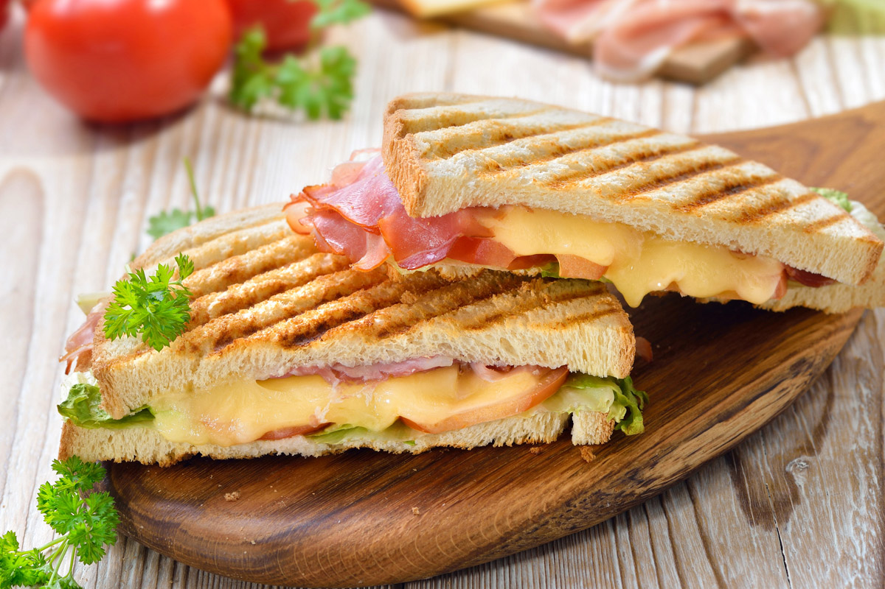

Holland!
The ultimate travel guide for Amsterdam! (according to me)

I've tried to do my best to come up with all the best things to see, do, and taste while you're in Amsterdam. I hope this little website will help you plan your trip and discover some new things!
The center of Amsterdam is filled with old architecture from the 1600's and 1700's, just walking through the little alleys and streets is already fun on its own. I would definitely recommend you to just take some time to wander and exlore!
This page gives you an overview of all the neighboorhoods in Amsterdam.
Jordaan Neighborhood
Jordaan is one of Amsterdam's most famous and popular neighboorhoods. Here you'll find among other things the Anne Frank house, but it's also the place where many of the locals live, so it's a great place to explore the real Amsterdam!
Museum Square
The Museum square is famous for...well museums of course! But even if you're not going inside any of them, there is a nice park which will give you a panoramic view of all the old and beautiful architecture in that area.
Vondel Park
The Vondel park is where all the people go on sunny days. It's a great place for some people watching and to get away from all the hustle and bustle in the city.
Dam Square
Around the dam square you will find some of Amsterdam's old churches, the national monument, and the Royal palace. It's a great place to do some sightseeing!
Traditional Dutch food is quite simple and boring, but when it comes to our snack food there are tons of delicious options. I would be on the lookout for little cafes and lunch places when you're there if you want to try some more local dishes.
Below I've listed some of the classic and famous food options.
Uitsmijter
The uitsmijter is a Traditional Dutch meal. It's an open faced sandwich most often made with fried eggs,ham, and cheese, but these days restaurants and cafes will serve all sorts of different versions.
Tosti
A Tosti (toastie) is very similar to the uitsmijter. Again the most classic version is with ham and cheese and a side of ketchup. Nowadays they've become much more fancy with many different combinations of ingredients and dips, and of course it's made with some delicious bread as well.
Hartige Pannekoek (Hearty Pancake)
If you like pancakes of any kind, I would recommend you to go to a pancake house. You can get anyhting there from the typical sweet pancakes with some ice cream and nutella, to traditional Dutch hearty pancakes topped will all sorts of delicious foods.
Indonesian Restaurants
There are lots of Indonesian restaurants in the Netherlands because of our colonial history. If you like Indonesian food or have ever been curious about it, you can give it a try in Amsterdam.
Tapas
Like Denmark has ad-libitum sushi everwhere, the Netherlands has a similar trend but with tapas. La Cubanita is a popular chain for this kind of tapas
Pizzeria
Pizza is pizza, but then again it's always a bit different in other countries. One of the first things I do when I go back home is visit the local pizzeria. If you love pizza, then definitely visit one of the many Italian pizzerias in Amsterdam!
The Snackbar
Snackbars are the most popular and common form of fast food in the Netherlands. It's often done as a take-away, but they usually also have some seating space. Typically people will order some fries with mayonnaise and then add on their favorite deep fried snacks. The most popular snacks are the Frikandel and Kroket, and I also recommend the cheese souffle. Of course there are many more snacks, and they will be on display for you to choose from. You can find snackbars almost everywhere, and in Amsterdam there are tons of them.
Shoarma
Like most European couttries the Netherlands has plenty of places selling kebab, but we also have something called shoarma! It's a bit similar to Gyros, and it's super popular in Holland. People will eat it with a pita, put it on pizza's, or make it for dinner. You'll find little places selling it everywhere, and most often people order it as a take away. It usually comes with fries, a pita, salad, shoarma of course, and looooots of garlic sauce. Another common choice is the "kapsalon" which mixes it all together in one box, but also with lots of cheese!
Kibelling
Dutch people love their seafood! It shouldn't be hard to find a fish stand, and if you do fried Kibbeling is a great snack! Kibbeling is fried Cod fish served with either tartar or garlic sauce.
Stroopwafels

Stroopwafels are a sort of syrup waffle. It's probably the most famous dutch cookie in the world, you can even get it at Netto, but I would recommend you try a fresh one from one of the streetvendors if you see one. They're the best when they are just made!
Bakeries
Holland is full of bakeries, it's where most of us go to get our bread, sweets, and other snacks. If you visit one you'll usually see a large glass case with all that they offer.
Here are some of my favorites:
Roze koek (pink cookie), a cake like cookie that is covered in pink frosting.
Gevuled koek (filled cookie), a cookie that is stuffed with an almond filling.
Boter koek (Butter Cookie), A heavy cookie that is more like a cake. It's of course made of lots of butter and it's pretty sweet.
Saucijzen broodje (sausage roll), a unique Dutch spin on the typical sausage roll. Simple but delicious!
Supermarkets
The Netherlands has many different supermarket chains, but the two most important ones are the Jumbo and Albert Heijn.
Jumbo is sort of the Dutch version of a Netto and Albert Heijn is more like an Irma. Jumbo is a great place to buy some some cheap food and snacks. Albert Heijn on the other hand is great for finding some more fancy and unique products.
Either way definitely check out a supermarket! There's actually a pretty huge difference between Dutch and Danish supermarkets, lots of different products and foods, and sooooo many great snacks!
As you've probably already guessed, there are tons of canal tours that you can take in Amsterdam. If you want to take one I would do a little bit of research on which is the best/cheapest.
Amsterdam is full of museums. From the old art at the famous Rijksmuseum, to the microbe museum. Of course you're already going to the Anne Frank house, but if museums are your thing I would check out these:

At the Zaanse Schans you can get a feel for what the old Netherlands looked like. It's an area full of windmills, houses, and other old buildings.
You can take a train from Amsterdam Central station to Zaandijk Zaanse Schans railway station, which is about 18 minutes away.
The Keukenhof is a one of the largest flower gardens in the world full of tulips and many other plants and flowers. If you want to have a feel of what the huge tulip fields look like in spring, this is a great place to visit!
Right now we're in the middle of tulip season, so this would be the perfect time to go.
The Kalverstraat is the Strøget of Amsterdam. Here you'll find tons of famous chains and many other shops!
By far the easiest way to get around is public transportation. You can take trains, trams, buses, metro, and ferries to get where you are going. The Netherlands has a similar system to the Danish rejsekort called the OV chipkaart. You can buy it at ticket vending machines, but you'll need to keep more than 75kr on it to be able to use it, and of course when you go home you'll be stuck with it.
If you're only there for a few days I would recommend downloading the GVB app, basically the rejseplanen of Amsterdam. On there there you can plan your trips, and buy tickets for their buses, the metro, and trams.
Another option is to buy an, Iamsterdam card at the central station, you can also buy it online in advance if you want. The card lets you use the metro, tram, bus and ferry in the city, and you can also go to lots of museums, landmarks, and other activities with it for free! Cards last for a certain amount of time starting at 24 hours, but can go up to 120hrs.
You could also just buy tickets from the machines when you need them, transportation in Amsterdam is relatively cheap compared to other countries, and you'll probably be exploring most of the city on foot anyway. I just wanted to list all the options for you, so you can decide what works best for you.
Iamsterdam card
If you like the idea of the Iamsterdam card you can take a look at their website here. Check out their full list of activities that you can do with it to see if it's worth your time (and money).
Some of it is just boring old museums, but you can also: go to an observation tower, take a canal tour, rent a bike, go to a castle, and many more things like that. Just be careful some activities require a reservation and others only give you a discount, but you can filter by free activities on their website.
GVB app
You can download the GVB app here.
1 Hour tickets start at 24kr, but it's much cheaper to buy for one or multiple days!
Just be careful, even though their app will show you train routes and other buses, their tickets only cover their own buses, the trams, and the metro.
From the airport
Probably the easiest way to get into the city is to take the train in the airport to Amsterdam Central station.
There are lots of signs guiding you in the airport and also many people to help you out if you get confused.
The NS (Dutch version of the DSB) has many ticket counters and ticket machines, and also other staff to help guide tourists. They also have their own app called the NS app, on which you can buy train tickets and plan your route.